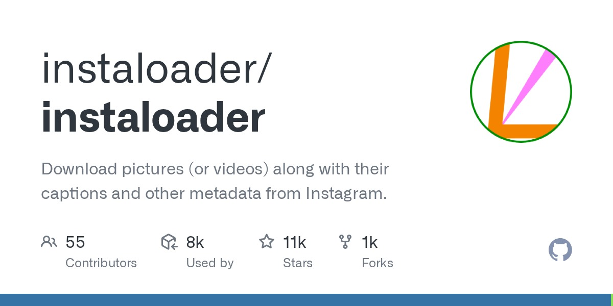
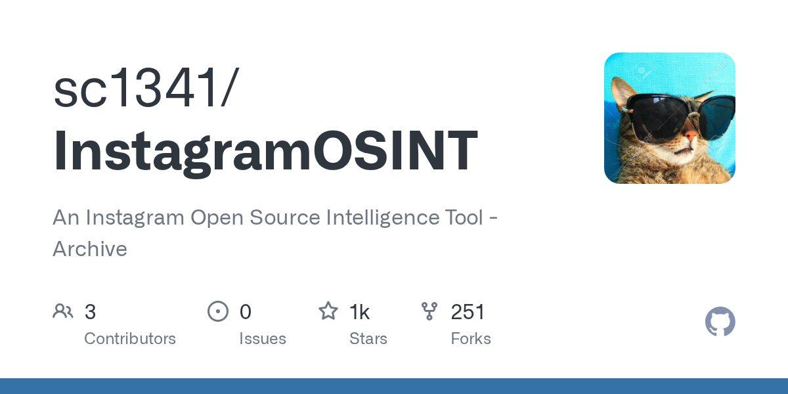
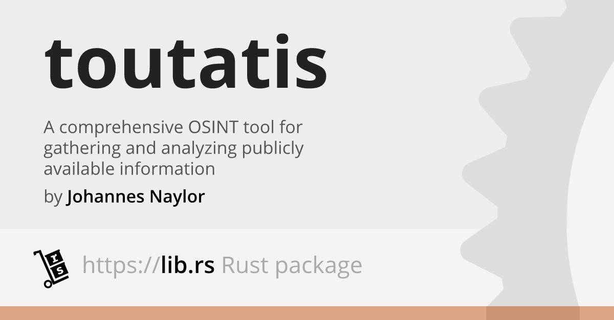

What is Really Hidden? Discussing Instagram OSINT Tools
Oct 09, 2025

Admittedly, I have utilised my hardcore OSINT skills to dig up information about people online. To clarify, this was purely experimental, and fully legal, you're going to just have to trust me. In these moments, I learned the sheer volume of personal data that can be pulled from publicly available information.
Let's talk Instagram. From usernames, location data, stories, and meta-data, a threat actor can extract a ton of information about you from your account, potentially utilising it for malicious purposes.
From just a profile, you can often gather: - Email addresses and phone numbers (if linked) - Location history from tagged posts - Old usernames and account changes - Connections to other platforms (like Facebook) - Business account info (category, linked emails) - Metadata from posts, even private ones if you know where to look

Instaloader
Instaloader is one of the most popular Instagram OSINT tools. It’s a command-line program that lets you download: - Public and private profiles (private requires login) - Posts, stories, highlights, and captions - Hashtags and geotagged content - Comments and metadata - Changes in usernames (helpful for tracking accounts over time)
Intelligence specialists can utilise the command
instaloader profile <username>to build a history of someone's posts, or to keep a copy of content before it gets deleted by the user or by Instagram such as for 24 hour stories. Instaloder provides a way to automate this.

InstagramOSINT
The InstagramOSINT script focuses on pulling account-level details that aren’t obvious just from looking at a profile. It can reveal: - Full username, display name, and bio - Profile picture URL (in full resolution) - Number of posts, followers, and following - Whether the account is private or verified - Connected Facebook accounts - If it’s a business account, what category it’s listed under - Public photos
After the installation of this tool, specialists can run the command
python3 main.py --username <username>Please note: this tool is now archived and is no longer maintained.

Toutatis
Toutatis digs deeper into sensitive details. With a valid Instagram session ID (basically a cookie from being logged in), it can extract: - Linked phone numbers - Registered email addresses - Account IDs - Connections to other accounts
This tool can be utilised by running the command
python toutatis.py -u <username> -s <session_id>Investigators don't even need to use tools to extract information, as Instagram itself can provide plenty of information.
Profile Information
Your profile can reveal username patterns that might match across other platforms, ddisplay names that can include full names, nicknames, or initials, bios with links to websites, jobs, or interests, and profile picture in high resolution which can be used to cross-matched your identity on other social media websites.
Usernames and IDs
Every Instagram account has a unique numeric user ID behind the username. Even if someone changes their username, that ID remains the same. This makes it possible to track old usernames or link multiple accounts to the same person.
Posts and Metadata
Captions, hashtags, and mentions often point to locations, hobbies, or social circles. Observation of adtes and times of your posts can reveal routines such as when you're typically active online. Geotags can reveal your frequent travel spots, home addresses, or workplaces.
Stories and Highlights
Even stories can be captured with screenshots, mirrors, and even third-party story viewing tools. Your Highlights serve as a diary of places you've visited, life events, or personal milestones which can all be utilised against you. A threat actor may choose to start gathering information about your day-to-day such as which gym you attend, or local walking paths.
Connections
Follower and following lists can map out someone’s social network. Mutual connections may reveal close friends, employers, or family members. Your tagged photos can lead to additional accounts belonging to the same circle.
Public Search and Mirrors
Instagram content is indexed by search engines, so using Google dorks can uncover cached or mirrored versions of posts. Mirror sites and third-party Instagram viewers often display content without login restrictions, sometimes even after it’s been deleted from the main platform.
Each tool and Instagram itself, provides a unique approach to obtaining information, and when utilised together, they can reveal a LOT of information without even needing an account or access to a private database. When conducting an investigation, they can be very powerful and is a reminder that Instagram is never fully private.
A general rule of thumb always assume that anything you share online could end up in the hands of a threat actor. If that makes you uncomfortable, perhaps it’s best not to post it.